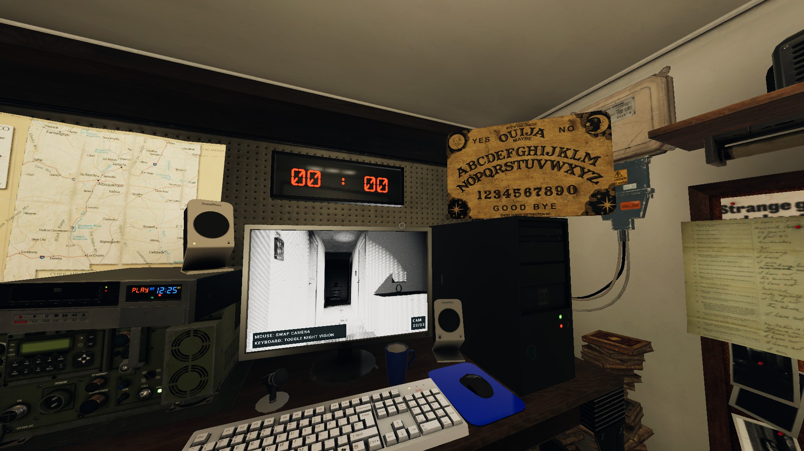

Ghost Characters
Up to 0.9.2.0
This page offers detailed insights into Ghost Characters, one of the most intriguing mechanics in Phasmophobia. The information presented here ranges from clear to nuanced observations. Sources include insights from Insym, Psycho, CJ, and my personal gameplay experiences. I strive to keep this page updated regularly, removing outdated techniques. However, be mindful that game mechanics may change without prior notice.
The numbers in this guide are largely reliable, as many are directly provided by the developers. However, some are based on personal testing and will be presented as educated estimates.
General Knowledge:
- A player's walking speed is 1.8 m/s, while their sprinting speed is 3 m/s.
- A ghost's base hunting speed is typically 1.7 m/s if unmodified.
- LOS Acceleration: When a player is being chased and remains in the ghost's Line of Sight (LOS), the ghost can accelerate exponentially, rapidly increasing its speed. Unless explicitly stated otherwise, ghosts benefit from LOS acceleration.
- The maximum ghost speed is calculated as the minimum possible ghost speed multiplied by 1.65. For a normal ghost, this results in a top speed of 2.65 m/s.
Spirit
- After being smudged, a Spirit has a 180-second hunting prevention period, compared to the 90-second period for most other ghosts.
Wraith
- A Wraith will never step on a salt pile.
- A Wraith can teleport to any player at any time. This teleportation generates an EMF Level 2 or 5 reading, and you can take interaction photos at the exact location of the teleport. If you encounter this type of EMF reading—appearing out of nowhere without any nearby interaction—or if the ghost performs interactions, events, or initiates hunts near you even when you're far from the ghost room, the Wraith should be considered a likely suspect.
Phantom
- A Phantom manifests less frequently during hunts compared to other ghosts. After each blink, it remains invisible for a slightly longer duration, disappearing for 0.8–1.5 seconds, compared to the 0.3–0.5 seconds typical for most ghosts.
- When a photo is taken of a Phantom, it will disappear; however, the ghost event or hunt will continue unaffected by its demanifestation. You will still hear its sounds. Additionally, the photo will register as a ghost photo, but the Phantom itself will not appear in the image.
- A Phantom can approach players at any time, bypassing the usual roaming distance constraints. Unlike a Wraith teleport, the Phantom physically walks to the player. This action generates an EMF Level 2 or 5 reading. If you encounter such an EMF reading—appearing out of nowhere without any nearby interaction—or if the ghost performs interactions, events, or starts hunts near you while you're far from the ghost room, the Phantom should be considered a potential suspect.
- Looking at a Phantom's manifestation during a ghost event or hunt causes your sanity to decrease at double the rate compared to other ghosts.
Poltergeist
- A Poltergeist can throw multiple objects simultaneously, generating an EMF Level 2 or 3. If the Activity Chart is accessible, a spike of up to 10 activity value can be observed, as each thrown item contributes to the total activity. Additionally, for each item thrown, all players near the throw lose 2% sanity.
- A Poltergeist can perform exceptionally strong throws, making them 1.5 to 2 times more powerful than standard ghost throws. These throws travel at higher speeds and typically result in a loud, forceful impact upon landing.
- During hunts, a Poltergeist can throw an object within range every 0.5 seconds. In contrast, general ghosts have only a 50% chance of performing a throw within the same time frame.
Banshee
- A Banshee becomes obsessed with a specific player. During hunts, the Banshee focuses solely on its obsession, completely ignoring other players. It will not chase or attempt to kill non-obsession players, and those players cannot complete objectives related to being chased by the ghost. If a Banshee's obsession is lost—either by leaving the investigation area or being killed—it will begin targeting and attempting to kill any remaining players.
- A Banshee exclusively considers its obsession's sanity and bases its behaviour entirely on that player's sanity level.
- A Banshee can walk to its obsession, ignoring the usual roaming distance constraints, similar to how a Phantom can walk up to any player.
- A Banshee has a preference for performing singing ghost events.
- A Banshee's singing ghost event causes an additional 5% sanity loss for its obsession.
- If the obsession dies, the Banshee will select a new obsession while not actively hunting.
- A Banshee can produce a high-pitched scream that can be detected using a parabolic microphone.
Jinn
- All of a Jinn's abilities function only when the breaker is turned **on**. Turning the breaker off disables these abilities. Consequently, a Jinn will never turn off the breaker.
- A Jinn moves faster during a hunt when its target is more than 3 metres away, reaching a speed of 2.5 m/s. Once it gets within 3 metres of the target, it instantly slows down to the normal hunting speed of 1.7 m/s and regains the ability to accelerate through Line of Sight (LOS) mechanics.
- If a Jinn is within 3 metres of a player or in the same room as one, it can choose to drain 25% sanity from all players within this 3-metre radius. This action will generate an EMF reading at the breaker.
Mare
- A Mare can start hunting at 60% sanity if it is in a room with the lights off, but it requires the player's sanity to drop to 40% to begin hunting if the lights in the room are on.
- A Mare cannot turn on lights and has a stronger inclination to turn off lights.
- There is a chance that if a player turns on the light in a Mare's room, the Mare will immediately turn it off.
- A Mare is more likely to perform a light bulb explosion ghost event.
- A Mare becomes extremely aggressive when a player's sanity is low, especially if the lights are off. Its behaviour escalates rapidly as sanity decreases, with significantly reduced hunting cooldowns, resembling the aggressive nature of a Demon.
- A Mare can be repelled from an area with excessive lighting. It will wander a significant distance to locate a darker location.
Revenant
- A Revenant can travel at a speed of 3 m/s when it is aware of a player's location. If it does not detect a player, its movement speed is reduced to 1 m/s. A Revenant does not benefit from Line of Sight (LOS) acceleration.
- A Revenant will instantly accelerate upon spotting a player. However, it will gradually slow down over 2 seconds after losing sight of the player. Using a smudge stick on the Revenant will cause it to lose sight of the player as well, triggering the slowdown.
Shade
- A Shade has a 0% chance of performing a ghost event when the players' sanity is at 100%. For every 1% sanity loss, a Shade's chance of performing a ghost event increases by 2%, up to a maximum of 100%. This means that at lower sanity levels, a Shade can perform ghost events as frequently as other ghosts.
- A Shade can only start hunting when the average team sanity drops to 35%, compared to 50% for most other ghosts.
- A Shade has a preference for hissing, air-ball, and shadow-manifestation ghost events. Notably, it favours shadow manifestations to such an extent that it can even appear as a shadow when summoned using a Summoning Circle.
Demon
- A Demon can start hunting regularly from 70% sanity, compared to 50% for most ghosts. Additionally, a Demon has a rare ability to initiate hunts regardless of sanity, even when it is at 100%.
- After being smudged, a Demon has a reduced hunting prevention period of 60 seconds, compared to the 90 seconds typical for most other ghosts.
- A Demon often has a significantly shorter hunting cooldown, with a minimum of 20 seconds before starting another hunt, compared to 25 seconds for most other ghosts. This makes chain-hunting a common behaviour for Demons.
- A Crucifix affects a Demon with an additional 2 metres of range compared to other ghosts.
Yurei
- A Yurei can activate its ability to drain 13% sanity from all players in the same room. When this occurs, it performs a delusional interaction with doors, where the visual movement of the door appears detached from the corresponding sound of it opening or closing.
- A Yurei becomes more confined to the room where it is smudged for the duration of the smudge effect, reducing its tendency to wander.
Oni
- An Oni frequently performs ghost events in quick succession, making back-to-back events a common occurrence.
- An Oni's ghost events drain twice as much sanity compared to those of other ghosts.
- An Oni cannot perform air-ball or shadow-manifesting ghost events. However, it can still produce hissing sounds. To rule out an Oni, confirm the occurrence of an air-ball ghost event.
- An Oni manifests more clearly during hunts compared to other ghosts. After each blink, it remains invisible for a shorter duration, disappearing for only 0.1–0.2 seconds, compared to the 0.3–0.5 seconds typical of most ghosts.
Yokai
- A Yokai can be angered by a player's talking. If a player speaks near a Yokai, it can initiate a hunt at 80% sanity, targeting the noisy player directly.
- A Yokai has a significantly reduced range for hearing a player's voice and detecting electronic devices during a hunt, limited to 2 metres compared to the standard 8 metres for most ghosts.
- A Yokai becomes more active when players are noisy and talkative, but it remains relatively passive if players stay quiet.
Hantu
- A Hantu always has Freezing Temperatures as one of its evidences when evidences are enabled.
- A Hantu cannot turn on the breaker but has double the chance of turning it off. Additionally, if the breaker is off, a Hantu's breath may become visible in cold environments.
- Hantu's speed is strongly influenced by the temperature of the room it is in. The movement speed in metres per second (m/s) based on the temperature (in degrees Celsius) is as follows:
- 1.1 m/s when the temperature is above 15°C
- 1.75 m/s when the temperature is above 12°C
- 2.1 m/s when the temperature is above 9°C
- 2.3 m/s when the temperature is above 6°C
- 2.5 m/s when the temperature is above 3°C
- 2.7 m/s when the temperature is below 0°C
- Hantu does not benefit from Line of Sight (LOS) acceleration.
Goryo
- Goryo always has D.O.T.S Projector as one of its evidences when evidences are enabled. Goryo's D.O.T.S Projector interactions cannot be seen with the naked eye. They are only visible through night vision on electronic devices, and only when no one is present in Goryo's room. If someone is in the room, it will not perform the interaction.
- Goryo cannot change its ghost room or wander over long distances.
Myling
- A Myling is unusually quiet during hunts. Its hunting and footstep sounds can only be heard from an extremely close distance, approximately 5 metres, compared to the 12 metres typical for most other ghosts.
- A Myling is slightly more likely to respond to the parabolic microphone compared to other ghosts.
Onryo
- An Onryo has a hunting threshold of 60% sanity, compared to 50% for most other ghosts..
- An Onryo starts the game with 3 tokens. Each time it successfully extinguishes a fire source—such as candles, lighters, or a campfire—it consumes one token.
- If all tokens are consumed, the next time an Onryo extinguishes a fire, it has a 50% chance of initiating a hunt regardless of the player's sanity. The fire must be extinguished directly by the Onryo for it to consume a token or trigger a potential hunt. Fire sources that go out naturally, due to heavy rain, or because they are thrown by players do not count.
- Each time a player dies, the Onryo's chance of initiating a hunt after extinguishing a fire increases by 25%.
- An Onryo cannot start a hunt if multiple fire sources are present and lit, as these function similarly to a crucifix. Each time an Onryo attempts to initiate a hunt within the range of a lit candle, it will extinguish the candle instead.
- An Onryo is highly motivated to extinguish fire sources quickly and consistently. However, if it fails to do so, it will prefer to stay away from the fire source.
The Twins
- In addition to the original ghost, a large circular area known as "The Decoy" hovers above the ghost, acting as its twin. The decoy can perform interactions within the range of the decoy area, creating the illusion of activity from a separate entity.
- Each time the ghost or the decoy performs an interaction, the other will immediately follow with another interaction. This phenomenon is commonly referred to as a "twin interaction." Both the original ghost and the decoy can generate EMF Level 5 through their interactions.
- .
- Since the decoy originates as an area, its hunt must begin following a decoy interaction. Upon interaction, the decoy collapses from an area into a specific position based on the location of the interaction. From this position, the decoy can manifest as a ghost and initiate a hunt.
- While hunting, the decoy can move at a speed of 1.9 m/s, whereas the original ghost can only travel at 1.5 m/s.
Raiju
- A Raiju can start hunting at 65% sanity when electronic devices are on and nearby, compared to the 50% threshold for most other ghosts.
- When electronic devices are on and nearby, a Raiju can absorb power from them, increasing its hunting speed to 2.5 m/s.
- A Raiju has a larger range for impacting electronic devices, with a 10-meter range compared to the 8-meter range typical for most other ghosts.
Obake
- Obake always has Ultraviolet as one of its evidences when evidences are enabled.
- Obake has a 75% chance of leaving fingerprints, meaning it can sometimes fail to leave fingerprints. In contrast, all other fingerprint ghosts always leave fingerprints (100%).
- Obake can occasionally leave special six-fingered fingerprints on doors, windows, closets, lockers, and possibly cooling boxes. For cell doors and keyboards, the fingerprints will feature five fingers, compared to the standard four fingers left by other ghosts. On light switches, the fingerprints will be noticeably longer than the switch itself, unlike the small nub seen with general ghosts. All of Obake's special fingerprints have a distinctive appearance, resembling the shape of an eagle's foot.
- Obake can activate its power to make the fingerprints it leaves persist for only half the usual duration, compared to other ghosts.
- Obake can now shape-shift into another ghost model of the same gender while hunting. Every blink has a 6.66% chance for Obake to shape-shift, and this transformation is guaranteed to happen at least once during each hunt.
The Mimic
- The Mimic always has Ghost Orb.
- The Mimic has a minimum of one minute before it can switch the ghost it is mimicking. If it is not engaged in activities such as checking ghost abilities, starting a hunt, performing a ghost event, or hunting, the Mimic is most likely to switch its mimic every minute.
- The Mimic can mimic itself, effectively becoming a plain ghost without any distinctive traits.
- The Mimic can mimic a player, rendering itself inactive and unable to perform any actions during that time.
- If The Mimic is mimicking a Thaye, it will randomly select an age. Each time it successfully ages, it will switch to mimicking another ghost instead.
Moroi
- Moroi always has Spirit Box as one of its evidences when evidences are enabled.
- Moroi can curse players by answering questions through the Spirit Box or giving paranormal sounds via the Parabolic Microphone. When a player is cursed, light sources and candles no longer prevent sanity from dropping, and the cursed player's sanity will decrease at twice the normal rate. The curse can be paused if the cursed player leaves the investigation area, and it can be fully stopped if the cursed player takes a Sanity Pill.
- Moroi's hunting speed is tied to the players' average sanity. Upon entering the hunting sanity threshold, for every 5% decrease in sanity, Moroi gains an additional 0.075 m/s in speed. The speed progression based on sanity is as follows:
- 1.5 m/s (45%-100%)
- 1.583 m/s (40%-45%)
- 1.66 m/s (35%-40%)
- 1.749 m/s (30%-35%)
- 1.832 m/s (25%-30%)
- 1.915 m/s (20%-25%)
- 1.998 m/s (15%-20%)
- 2.081 m/s (10%-15%)
- 2.164 m/s (5%-10%)
- 2.25 m/s (0%-5%)
- Moroi can be stunned by Smudge Sticks for 12 seconds, which is twice as long as the 6-second stun effect for most other ghosts.
Deogen
- Deogen always has Spirit Box as one of its evidences when evidences are enabled.
- Deogen always sees all players. When it starts hunting, it will target the closest player based on Euclidean distance and hunt them down. If another player steps in between and is closer to the Deogen, it may switch its target to that player instead.
- Deogen's speed is directly tied to the distance between it and the targeted player. If the target is 6 metres away, Deogen will move at a speed of 3 m/s towards the target. As the distance decreases, Deogen's speed will gradually drop, reaching 0.4 m/s when it is just 2.5 metres away from the target.
- Deogen can only start hunting when the team's average sanity drops to 40%, compared to the 50% threshold for most other ghosts.
- Deogen can make a special roar through the Spirit Box when a player asks questions within 1 metre of it. There is a 33% chance of hearing the roar in this situation.
- Deogen does not benefit from Line of Sight (LOS) acceleration.
- Deogen has an increased chance of performing Ghost Writing and interacting with the D.O.T.S Projector.
Thaye
- Thaye is a ghost that ages over time, and this aging can be observed when asking questions with the Ouija Board.
- Thaye starts the game in its youngest and most energetic form. It can begin hunting at 75% sanity, compared to the 50% threshold for most other ghosts. In this form, it moves at a hunting speed of 2.7 m/s and has double the chance of performing interactions and ghost events.
- For every 1-2 minutes, if a player is present in the same room as Thaye, it will age. If there is no player in the room, a 30-second window will be added before the next aging process occurs. Once Thaye ages, it will experience the following changes:
- The hunting threshold will drop by 6%
- Its hunting speed will decrease by 0.175 m/s
- It will lose 15% of its chance to perform interactions and ghost events
- Thaye can age a total of 10 times. The oldest form of Thaye will have the following attributes:
- A 15% hunting threshold
- A hunting speed of 1 m/s
- Half the chance of performing interactions and ghost events
- Thaye does not benefit from Line of Sight (LOS) acceleration.
- Thaye has an increased chance of performing both Ghost Writing and interacting with the D.O.T.S Projector.